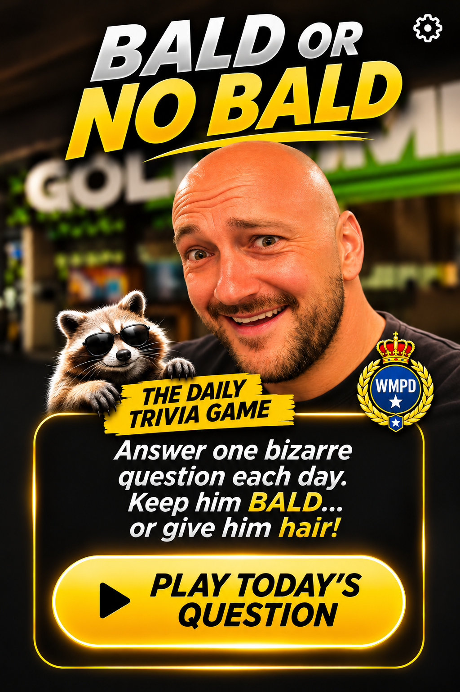
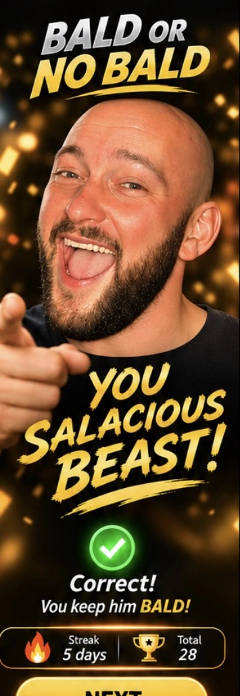

BALD OR
NO BALD
NO BALD
ONE QUESTION. ONE HEAD. EVERY DAY.

0🔥 Streak
0🏆 Correct
0/4🛡️ Badges
🧪 TEST MODE
Preview screens and play unlimited practice questions. Nothing here changes your real score, streak, badges or daily answer.
📅 TODAY'S BIZARRE TRIVIA


👑 THE FREER SQUAD
Unlock one random Freer badge for every 3 correct daily answers in a row.
🏆 MY STATS
0Streak
0Best
0Correct
💇 HAIRSTYLE COLLECTION
Each wrong answer unlocks a ridiculous hairstyle.